FMOD Studio User Manual 2.02
FMOD Studio's profiler allows you to assess the performance and output of your project's events, mix, and snapshots. You can profile locally within FMOD Studio, or connect to a game via live update to profile it at runtime.
You can open the profiler window by clicking "Window > Profiler".
For information on connecting to your game via live update, please see the editing during live update chapter.
Profiler recordings are organized into sessions. Profiler sessions can be saved, and later, viewed and compared.
The profiler window's session browser can be used to view previously recorded sessions, create new ones, and organize them into folders for easy access.
You can also export sessions. This is useful for sharing information on any issues encountered either with fellow audio team members or with FMOD Studio support. To do this, right click on a recorded session or folder in the sessions browser and choose "Package Selection".
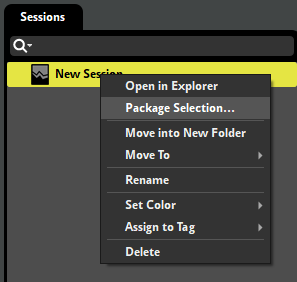
In this dialog you can choose whether to bundle the audio assets and/or the banks along with the session(s). This can be used to share sessions with others.
To record a new session right click in an empty space of the sessions browser and select "New Session". This creates a new blank session. Click on the "Record" button in the transport controls, represented by a circle, to begin recording. If you do not have a session actively selected in the sessions browser, clicking "Record" automatically creates a new session.
You shall see a system track generated, expanded to show waveform data and other graphs, and a master track.
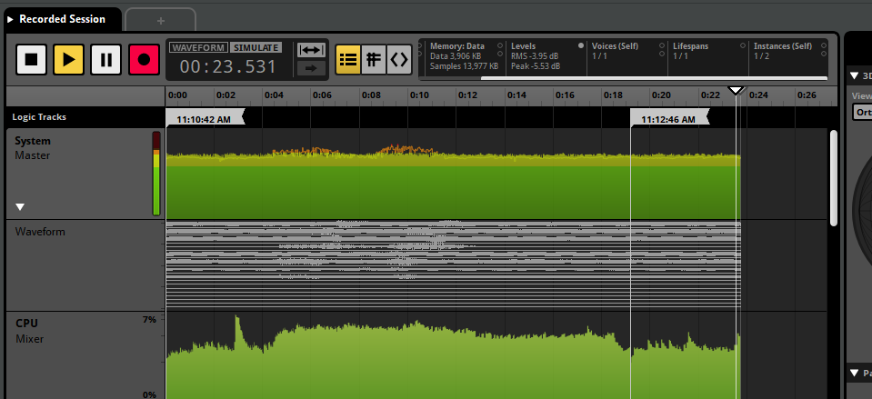
Once you have finished capturing data, press the "Stop" button in the transport bar.
By default, a track for each recorded event will automatically be added to the session once the recording is completed. You can display mixer tracks or event tracks by dragging and dropping them into the profiler session's editor pane.
You can change when event tracks are added to a recorded profiler session by enabling "Automatically add event tracks to profiler sessions" in the interface tab of the preferences dialog. You can select whether event tracks are added while recording, after recording, or only when explicitly added.
You can also toggle the "Continuous Zoom to Fit" button to the right of the time/beats display. When enabled the profiler session will automatically keep zooming out as the recording gets longer so that the entire recorded session remains visible.
It is possible to record FMOD Studio auditioning events, sandbox sessions, and profiling already recorded profiler sessions. These are useful to analyze the performance of your project or for comparing changes made to your project within the exact same environment as a previously recorded session.
While an event is playing in the event editor or while a sandbox session is currently in play, click the record button in a profiler window.
Select a profiler session to record ("Tab 1") and open a new tab in the profiler session's editor pane by clicking "View > New Tab" ("Tab 2"). You can then play the recorded profiler ("Tab 1") in simulate mode and record its playback using the new tab ("Tab 2").
Once you have a recorded session, you can play it back as you would with an event, and hear your game's recorded output. Areas that show instantaneous values (such as the transport bar and 3D View) correspond to the playhead position. You can also use loop regions to repeat parts of the recording.
Each event or bus in the profiler displays a graph for a recorded metric. You can switch which metric of that event or bus is graphed by clicking on the categories of the master profiling statistics in the transport controls.
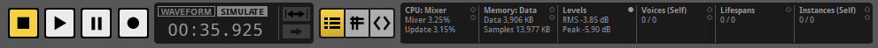
You can hover over graphs to see the value at a particular point.
The graphs available in the profiler are:
Waveform: Only available on the system master track. Displays the waveform of the recorded session.
CPU: Indicates CPU consumption. Does not include time spent calling update() from your game thread (which theoretically should be quite small). FMOD Studio also uses some other smaller worker threads (e.g. File I/O thread) which aren't included in these numbers.
CPU - Mixer (%): The CPU time the mixer thread is taking. The percentage represents how long it takes, in relation to the amount of time it has to complete a mix. For example, on XBox One where a mix block is 10ms (512 samples), 50% usage represents the mixer thread taking 5ms to complete.
CPU - Update (%): The CPU time the FMOD engine update takes to process commands and schedule sound playback, expressed as a percentage of the amount of time it has to complete an update.
Because the mixer buffers audio in advance, CPU numbers can potentially spike above 100% without having any noticeable effect on your game's audio. However, sustained or frequent spikes above 100% may consume the buffer, resulting in audible stuttering and artifacts.
Memory (KB): Displays the RAM in use by the system. For memory tracking to work, you must initialize the FMOD Studio system with the FMOD_STUDIO_INIT_MEMORY_TRACKING flag.
Memory - Data (KB): Indicates the total size of data of the data used by events and buses. For an event, this includes the memory consumed by the state of all instances of that event, as well as that consumed by all instances of streams playing in instances of that event.
For a bus, there are two graphs. The memory (self) graph includes only the memory used by the bus itself, while the memory (total) graph includes both the memory used by the bus and the memory used by all events and buses routed into that bus, as well as by streams in those event instances.
For the system master track, there are three graphs. The memory (self) graph includes only the memory used by the master bus; the memory (total) graph includes both the memory used by the master bus and the memory used by all events and buses in the project, as well as by streams; and the memory (total) graph includes all the memory included in the memory (total) graph as well as all memory consumed by the FMOD studio system.
Memory - Samples (KB): Indicates the total size of the non-streaming samples loaded into memory. For an event, this is the total of all sampledata loaded into memory that could be referenced by that event. For the master bus and system master track, this is the total size of all sampledata loaded in the project. For all other buses, this is the total size of all sampledata loaded into memory that could be referenced by the events routed into that bus. Non-streaming sampledata is usually only loaded into memory once even if it is referenced in multiple events and event instances, so the sample memory listed on a bus can be less than the sum of the sample memory listed for the events and buses routed into that bus.
File I/O (KB): Only available on the system master track. Displays file I/O. There are three graphs, for sample data, stream data, and bank metadata.
Levels (dB): Indicates the loudness of the output of an event or bus. The line represents the peak value and the solid colors represent the RMS (Root Mean Square).
Voices: Only available for events and the system master track. Displays how many voices are spawned by the event. The transparent background graph represents voices and virtual voices. Both "Self" and "Total" voices can be displayed.
Lifespans: Only available for events. Displays each instance of the event as a horizontal line. Clicking on one of these lines selects it, and displays the parameters of the instance in the deck.
Instances: Only available for events and the system master track. Displays the number of event instances that exist. There are three graphs: One for all instances including virtual and non-playing instances, one for all playing instances both virtual and non-virtual, and one for active instances only.
For "Voices" and "Instances", you can choose to show either self or total. Self refers to voices or instances that are spawned only from that event. Total refers to voices or instances that are spawned from nested or referenced events.
You can see a summary of the active graph type for the entire session in the birds eye view.
The overview pane is located to the right of the profiler window's editor pane, and contains the tools for viewing the event instances, parameters, and snapshots active during a session.
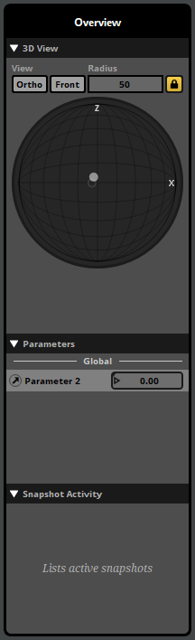
At the top of the overview section is the 3D view. The 3D view represents a spherical or cubic area surrounding the listener. You can toggle between a cubic or spherical area by clicking the ortho toggle button, and between a top-down (XZ) or front-on (XY) view by clicking the front toggle button.
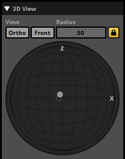
The radius of the sphere (or distance from the center of the cube to one of its faces) is defined by its radius property. The listener is always located at the exact center of this space, facing towards the positive extreme of the Z axis.
The 3D view displays the locations of event instances relative to the listener. Currently playing event instances are shown as filled circles, while virtual events are hollow circles. Event instances beyond the edges of the space are shown at its borders.
Stopped event instances are grayed out. They gradually fade from view over time, and completely vanish from the 3D view eight seconds after stopping. This makes it easier to notice event instances that are only active for very short periods.
Below the 3D view is the parameters list. If an event or snapshot instance is selected in the lifespans graph or the 3D view, it displays a list of the parameters used by that event instance, and their values. If no event or snapshot instance is selected, it instead displays a list of all the global parameters in your project.
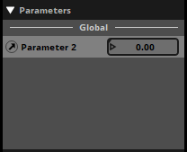
Underneath the 3D View is a list of snapshot names. This list represents all currently-playing and recently-stopped snapshot instances in your project.
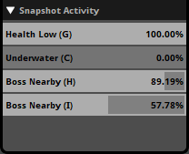
Currently-playing snapshot instances are displayed with a light gray border. The percentage to the right of the name of the snapshot indicates the intensity of the snapshot.
Stopped snapshot instances are displayed without a border. They remain in the list for eight seconds after they stop, making it easier to notice snapshot instances that are only active for very short periods.
To view a snapshot from this list in the mixer, right-click on any instance of that snapshot in the list and select "Open in Mixer" from the context menu.
You can add tags and notes for each profiler session in this section.
The profiler provides additional information about each event instance.
Clicking on an event in this view highlights its associated track and also presents a secondary 3D view in the deck which shows only events of a given type.
If an event instance is selected, the deck displays that instance's parameter values over time. Right clicking a parameter dial allows you to add a graph for that particular event instance's parameter. This is added as a subgraph in the multitrack view.
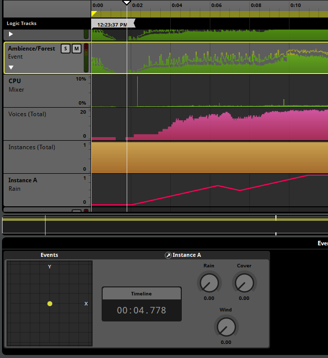
The information in a recorded session can be displayed in a table. This makes it easier to see the precise values of properties at any point in time within the session.
To view the information in a recorded session in a table, click on the Table button located next to the time indicator.
The values displayed in the table correspond to those recorded at the timeline playback position, or over a specific period of time, depending on the mode selected in the drop-down menu above the top-right corner of the table:
In any mode other than instantaneous value, you can select a period of time by clicking and dragging the mouse cursor below the timeline ruler.
Each column of the table view represents specific information about the events, snapshots, and buses in your project:
While in the table view, an eye-shaped icon appears next to each bus and event in the project. These icons indicate and toggle whether the buses and events appear in the profiler's tracks view.
You can filter the rows visible by using the search bar at the top of the table. You can use the magnifying glass menu to select a filter or manually type in the search bar with the following terms:
#tracked - Displays only the visible tracks in the tracks view#missing - Displays only tracks with missing metadata#query:(Colorable.color == <color>) - Displays only tracks labeled with the color specified in <color>#query:(isOfExactType(<type>)) - Displays only the type specified in <type>. Available types are:EventSnapshotMixerGroupMixerReturn#<tag> - Displays only tracks where the event has been tagged with the tag specified in <tag>AND, OR, NOT - Operators used for further filtering out search resultsFor more information on searching, please see the searching section of the Organizing the Project chapter.
All session captures also capture the API calls made by your FMOD Studio project.
To view the API calls being made, click on the API View button located next to the time indicator.
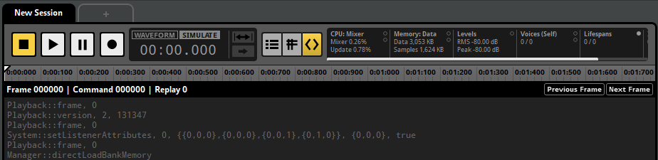
The API calls view displays the FMOD Studio API functions being called between each Studio::System::update, known as a frame. To move between frames, click on the "Previous Frame" or "Next Frame" buttons located at the top right of the API calls view.
The captured API calls are not written in any particular programming language, instead only displaying what FMOD Engine function was called and the arguments passed into it. All comments are prefixed with a hash (#) and do not affect playback.
Located at the top of the session editor window are two buttons. The track view and the API calls view. For more information about the API calls view, see the playing back a session section of this chapter.
You can choose to play back a profiler session using either the recorded waveform or the recorded API calls. These are known as the waveform playback mode and the simulate playback mode, respectively.
You can toggle between playing back with the recorded audio or with the API capture by clicking on the "Waveform" or "Simulate" button next to the time indicator.
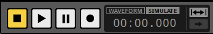
Starting the playback of a profiler session will stop any events currently being auditioned in the event editor.
When the waveform mode is selected, FMOD Studio will play back the audio as it was recorded during the recording session. Making changes to the project does not alter the recorded session in this mode.
When in simulate mode the playback of the recorded profiler sessions uses the API calls rather than playing back recorded audio. Simulate playback mode does not require banks to be rebuilt after making changes.
This is useful for debugging an audio issue found in a recorded session or making adjustments to events and buses then auditioning them in a real game scenario.
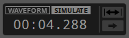
While in simulate mode you can hear events being played as if playing them through the event editor, so random playlists in multi instruments and scatterer instruments have randomized results.
Changes made to the project are updated in real time when in simulate mode so there is no need to rebuild banks.